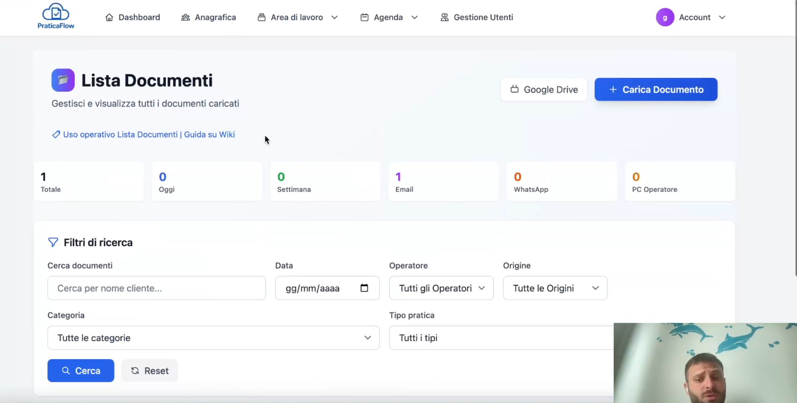

Lista Documenti in PraticaFlow: addio caos, benvenuta organizzazione

Basta cartelle piene di PDF sparsi o file con nomi incomprensibili. Con la Lista Documenti di PraticaFlow ogni file è collegato a pratica e cliente, ricercabile in un attimo e archiviato in modo ordinato.
La gestione documentale diventa semplice: checklist integrate, upload rapido e anteprima immediata rendono impossibile dimenticare un file o perderlo tra le cartelle.
Funzionalità della Lista Documenti
- Archiviazione centralizzata collegata a pratiche e clienti.
- Checklist dinamiche che ti ricordano i documenti mancanti.
- Anteprima immediata per immagini e PDF.
- Filtri avanzati per etichetta, data, cliente, pratica.
- Link rapidi da e verso il Dettaglio Pratica e la scheda cliente.
Routine consigliata
- Carica i documenti direttamente dalla pagina pratica o dalla scheda cliente.
- Usa le checklist per controllare che nulla manchi.
- Filtra per data o etichetta per trovare i file più recenti.
- Scarica o condividi in un click il documento richiesto dal cliente.